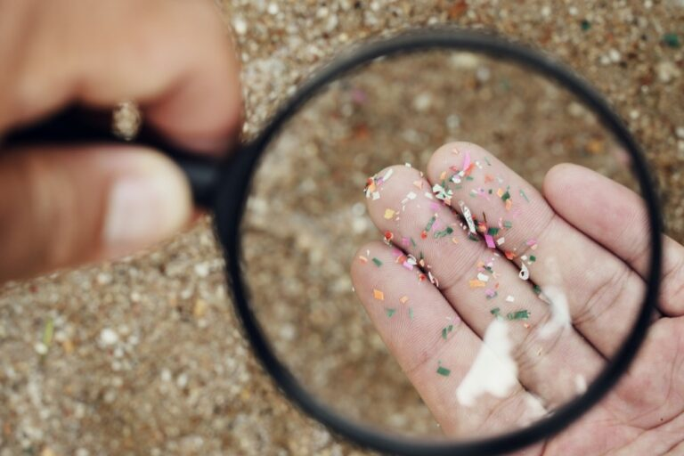
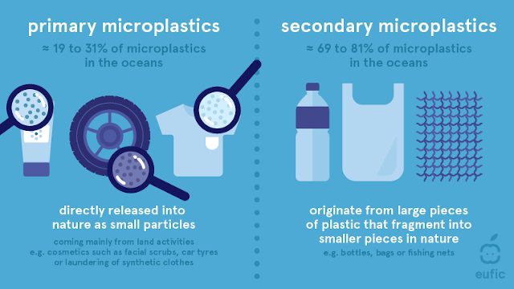
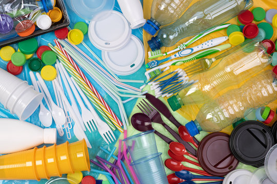

What are Microplastics?
Very small pieces of plastic that have made their way into the environment

Image Source: https://www.obpcert.org/microplastics-the-hidden-threat-ravaging-our-marine-ecosystems-and-human-health/
Primary and Secondary Classificatons:
- Primary: Designed to be small on purpose, such as exfoliating beads in face washes
- Secondary: Have been broken down from bigger items

Image Source: https://www.seasandstraws.com/microplastics-in-food.html
Where do Microplastics Come From?
Most microplastics come from single use plastics, or plastic items that are designed to be thrown away after only being used once

Image Source: https://stock.adobe.com/search?k=single+use+plastics